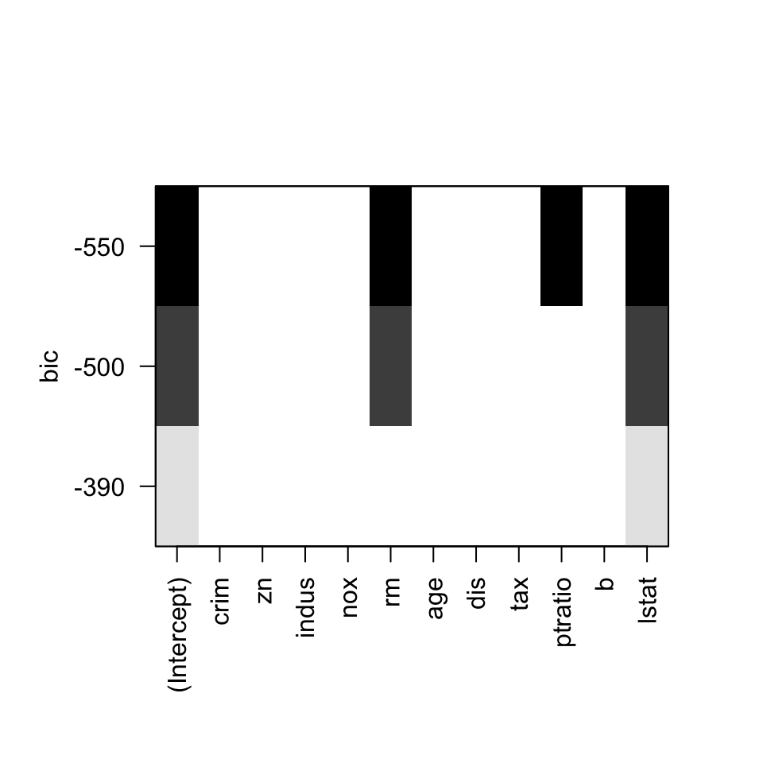

Lección 10 Regresión lineal
En esta lección, explicamos el uso de R para realizar regresiones lineales, tanto simples como múltiples. Presentaremos algunos ejemplos para ilustrar el uso de las funciones de R específicas para esta técnica de modelado estadístico, así como la posterior validación y adecuación del modelo mediante el análisis de los residuos. Aunque en la Lección 3 de la primera parte del curso ya introdujimos la regresión lineal sin entrar en mucha profundidad, es en esta lección donde desarrollaremos más ámpliamente este tema.
10.1 El modelo de regresión lineal en R
Uno de los problemas recurrentes en estadística es determinar a partir de un conjunto de observaciones de variables si existe alguna relación funcional entre una de las variables, llamada variable dependiente o de respuesta, y el resto de variables, conocidas como variables independientes o de control. Los objetivos de encontrar esta relación funcional son, por un lado, entender cómo los valores de la variable dependiente “dependen” de los de las variables independientes y, por otro lado, poder estimar el valor de la variable dependiente sobre un sujeto para el que conozcamos sus valores de las variables independientes. En esta lección nos centramos en el caso en que esta relación funcional es lineal.
Formalmente, la situación es la siguiente. Sean \(X_1\), …, \(X_k\) k variables (no necesariamente aleatorias), que serán las independientes, y sea \(Y\) la variable dependiente. Llamemos \(Y|{x_1,\ldots, x_k}\) a la variable aleatoria que nos da los valores de \(Y\) sobre los individuos en los que cada variable independiente \(X_i\) toma el correspondiente valor \(x_i\), y sea \(\mu_{Y|{x_1,\ldots, x_k}}\) el valor esperado de \(Y|{x_1,\ldots, x_k}\). Vamos a suponer que \(\mu_{Y|{x_1,\ldots, x_k}}\) es una función lineal de \(X_1\), …, \(X_k\), y que por lo tanto “en la realidad” existen unos coeficientes reales \(\beta_0\), \(\beta_1\), …, \(\beta_k\), que desconocemos, tales que, para cada posible vector de valores \((x_1,\ldots,x_k)\) de las variables independientes \(X_1\), …,\(X_k\), se tiene que
\[
\mu_{Y|{x_1,\ldots, x_k}}=\beta_0+\beta_1x_1+\cdots+\beta_kx_k.
\]
De esta manera, si denotamos por \(E_{x_1,\ldots,x_k}\) la variable error \[ Y|{x_1,\ldots, x_k}-\mu_{Y|{x_1,\ldots, x_k}} \] que, para cada individuo cuyas variables \(X_i\) valen \(x_i\), nos da la diferencia entre su valor de \(Y\) y el valor esperado de esta variable para los individuos con sus mismos valores de \(X_1\), …, \(X_k\), tenemos que \[ Y|{x_1,\ldots, x_k}=\beta_0+\beta_1x_1+\cdots+\beta_kx_k+E_{x_1,\ldots,x_k}. \] Esta ecuación nos dice que el valor de \(Y\) sobre un sujeto para el que \(X_1=x_1\), …, \(X_k=x_k\), viene dado por dos componentes: por un lado, una componente “fija” definida por el modelo lineal \(\mu_{Y|{x_1,\ldots, x_k}}=\beta_0+\beta_1x_1+\cdots+\beta_kx_k\), y por otro lado, el error aleatorio \(E_{x_1,\ldots,x_k}\). Por la linealidad de las esperanzas, como el valor esperado de \(Y|{x_1,\ldots, x_k}\) es \(\beta_0+\beta_1x_1+\cdots+\beta_kx_k\), el valor esperado del error \(E_{x_1,\ldots,x_k}\) es 0.
Si disponemos entonces de un conjunto de n datos \[ (x_{i1},x_{i2},\ldots,x_{ik},y)_{i=1,\ldots,n} \] donde cada vector \((x_{i1},x_{i2},\ldots,x_{ik},y)\) está formado por los valores de las variables \(X_1\), …, \(X_{k}\) e \(Y\) sobre un individuo, podemos usar estos datos para estimar los valores poblacionales de \(\beta_0\), \(\beta_1\), …, \(\beta_k\). Vamos a suponer que \(n>k\), por lo que no podemos esperar encontrar los valores de \(\beta_0\), \(\beta_1\), …, \(\beta_k\) simplemente resolviendo un sistema de ecuaciones.
Sean \(b_0\), \(b_1\), …, \(b_k\) nuestras estimaciones de \(\beta_0\), \(\beta_1\), …, \(\beta_k\), respectivamente, a partir de nuestro conjunto de datos. Podemos escribir entonces la función lineal de regresión \[ \widehat{y}=b_0+b_1x_{1}+\cdots+b_kx_{k} \] que nos permite estimar por medio de \(\widehat{y}\) el valor de \(Y\) que esperamos que tenga un sujeto para el que las variables \(X_1\), …, \(X_{k}\) valgan, respectivamente, \(x_1\), …, \(x_{k}\). En particular, para cada \(i=1,\ldots,n\), llamaremos \(\widehat{y}_i\) al valor de \(Y\) que estimamos sobre el sujeto \(i\)-ésimo de nuestro conjunto de datos, en el que las variables \(X_1\), …, \(X_{k}\) valen, respectivamente, \(x_{i1}\), …, \(x_{ik}\): \[ \widehat{y}_i=b_0+b_1x_{i1}+\cdots+b_kx_{ik}. \] Para cada \(i=1,\ldots,n\), denotaremos por \(e_i\) el error cometido con la estimación sobre el individuo i-ésimo de nuestro conjunto de datos, definido como la diferencia \[ y_i-\widehat{y}_i=y_i-(b_0+b_1x_{i1}+\cdots+b_kx_{ik}) \] entre el valor \(y_i\) de la variable \(Y\) observado sobre dicho sujeto i-ésimo y nuestra estimación \(\widehat{y}_i\) de este valor por medio de la función lineal que hemos encontrado.
La mayoría de las estrategias usadas para calcular las estimaciones \(b_0\), \(b_1\), …, \(b_k\) se basan en preestablecer un cierto criterio de “bondad” de la estimación de cada \(y_i\) por medio del correspondiente \(\widehat{y}_i\) y encontrar entonces los coeficientes que dan las “mejores” estimaciones según este criterio. El criterio más utilizado en este sentido es el de mínimos cuadrados, en el que se minimiza la suma de los cuadrados de los errores cometidos sobre los sujetos de nuestro conjunto de datos. Es decir, en el método de mínimos cuadrados se toman como estimaciones de \(\beta_0\), \(\beta_1\), …, \(\beta_k\) los valores \(b_0\), \(b_1\), …, \(b_k\) para los que la suma \[ SS_e=\sum_{i=1}^n e_i^2=\sum_{i=1}^n(y_i-b_0-b_1x_{i1}-\cdots-b_kx_{ik})^2 \] toma su valor mínimo: de ahí la coletilla de mínimos cuadrados. Como es el único método que vamos a explicar, a partir de ahora siempre que hablemos de regresión lineal nos referiremos a esta regresión lineal por el método de mínimos cuadrados. Además, hablaremos de regresión lineal simple si \(k=1\) (es decir, cuando usamos una única variable independiente) y de regresión lineal múltiple si \(k>1\) (es decir, cuando usamos más de una variable independiente).
La función básica de R para realizar una regresión lineal es lm. Su sintaxis básica es
lm(formula,data=..., subset=...)donde:
formularefiere a una fórmula que relaciona la variable respuesta y las variables independientes del modelo, en el sentido de las fórmulas introducidas en la Sección 9.1. Su estructura en este caso ha de ser la siguiente. En primer lugar, se escribe la variable dependiente, que necesariamente tiene que ser una variable numérica. A continuación, el símbolo ~ que indica la dependencia de esta variable respecto de las variables que se indiquen a su derecha. Finalmente, se incluyen las variables independientes separadas por símbolos +.dataes un parámetro opcional que sirve para especificar, si es necesario, el data frame al que pertenecen las variables utilizadas en la fórmula.subsetes otro parámetro opcional que sirve para especificar que la regresión sólo tenga en cuenta un subconjunto de las observaciones, definido mediante alguna condición lógica.
Así, por ejemplo, si tenemos un data frame llamado DF, con una variable numérica Y y tres variables independientes X1, X2 y X3, para realizar la regresión lineal de la variable Y respecto de X1, X2 y X3 se puede ejecutar
lm(Y~X1+X2+X3,data=DF)o
lm(DF$Y~DF$X1+DF$X2+DF$X3)Un atajo muy útil en la ejecución de lm cuando nuestro data frame DF tiene muchas variables y queremos obtener la funció de regresión lineal de una variable, Y, respecto de todas las otras es entrar
lm(Y~.,data=DF)El punto a la derecha de la ~ es una abreviatura de “la suma de todas las variables de DF diferentes de Y”.
El siguiente ejemplo ilustra el uso de la función lm y de la salida que proporciona.
Ejemplo 10.1 La tabla de datos Davis del paquete car contiene datos del peso y la altura de 200 hombres y mujeres que realizan ejercicio habitualmente obtenidos de dos formas distintas: los valores medidos con los instrumentos adecuados (báscula y escaliómetro, respectivamente) y los valores que notificaron estas personas antes de realizarse las mediciones.13 Veamos su estructura.
library(car)
data(Davis)
str(Davis)## 'data.frame': 200 obs. of 5 variables:
## $ sex : Factor w/ 2 levels "F","M": 2 1 1 2 1 2 2 2 2 2 ...
## $ weight: int 77 58 53 68 59 76 76 69 71 65 ...
## $ height: int 182 161 161 177 157 170 167 186 178 171 ...
## $ repwt : int 77 51 54 70 59 76 77 73 71 64 ...
## $ repht : int 180 159 158 175 155 165 165 180 175 170 ...En la Ayuda del objeto nos enteramos de que el factor sex indica el sexo del individuo, con niveles “F” y “M”; las variables cuantitativas weight y height indican, respectivamente, el peso (en kg.) y la altura (en cm.) medidas; y las variables cuantitativas repwt y repht indican, respectivamente, el peso (en kg.) y la altura (en cm.) notificadas por el individuo. Además, en la Descripción se nos avisa de que hay valores que faltan.
En este primer ejemplo, nos centramos en las variables weight y repwt y vamos a suponer que el peso esperado de una persona que realiza ejercicio habitualmente (nuestra población de interés) es función lineal del peso que dice que tiene, y vamos a estimar los coeficientes de esta función lineal. De esta manera, cuando una persona de la población de interés nos diga su peso, podremos estimar su peso real.
Lo primero que haremos será extraer un data frame formado por estas dos columnas, a las que renombraremos pesosy pesosnotif, respectivamente. Además, por si estas variables tienen valores NA, aplicaremos al data frame la función na.omit para eliminar filas que no correspondan a observaciones completas.
datospeso=data.frame(Davis$weight,Davis$repwt)
colnames(datospeso)=c("peso","pesonotif")
head(datospeso)| peso | pesonotif |
|---|---|
| 77 | 77 |
| 58 | 51 |
| 53 | 54 |
| 68 | 70 |
| 59 | 59 |
| 76 | 76 |
datospeso=na.omit(datospeso)
dim(datospeso)## [1] 183 2Han sobrevivido 183 de las 200 filas originales.
Para calcular la recta de regresión por mínimos cuadrados de la variable peso respecto de la variable pesonotif, usaremos la función lm.
lm(peso~pesonotif,data=datospeso)##
## Call:
## lm(formula = peso ~ pesonotif, data = datospeso)
##
## Coefficients:
## (Intercept) pesonotif
## 5.3363 0.9278El resultado obtenido significa que la recta de regresión buscada tiene término independiente (Intercept, el valor en el que la recta resultante corta el eje de ordenadas) \(b_0=5.3363\) y coeficiente de la variable peso \(b_1=0.9278\). Es decir, tenemos
\[
\widehat{\hbox{peso}}=5.3363+0.9278\cdot \hbox{pesonotif}.
\]
Vamos a representar gráficamente los puntos de la muestra conjuntamente con la recta de regresión encontrada:
plot(datospeso$pesonotif, datospeso$peso, pch=20, xlab="peso notificado", ylab="peso medido")
abline(lm(peso~pesonotif,data=datospeso), col="red")Figura 10.1: Gráfico de los pares de observaciones (pesonotif,peso) junto con la correspondiente recta de regresión.
Como se puede observar, la recta de regresión se ajusta notablemente a los puntos de la muestra indicando un buen comportamiento del modelo a nivel visual. Sin embargo, destaca una de las observaciones que se encuentra muy alejada tanto del patrón seguido por el resto de puntos como de la recta de regresión. Para obtener a qué observación corresponde ese punto, podríamos utilizar la función identify de R. Si inmediatamente después de generar el gráfico anterior ejecutáis
identify(datospeso$pesonotif,datospeso$peso)al pulsar con el cursor sobre un punto del gráfico podéis saber sus coordenadas. Como en este documento esto es imposible, lo que haremos será determinar ese punto anómalo como el que tiene ordenada mayor que 160:
which(datospeso$peso>160)## [1] 12datospeso[which(datospeso$peso>160),]| peso | pesonotif | |
|---|---|---|
| 12 | 166 | 56 |
| El pu | nto anó | malo, correspondiente al individuo 12 de la muestra, ¡dijo que pesaba 56 kg y en realidad pesaba 166! Más adelante, en la Sección 10.4, trataremos el procedimiento a seguir en estas situaciones. |
Veamos un segundo ejemplo.
Ejemplo 10.2 El fichero de datos “USA2012.txt” que podéis descargar desde el enlace https://raw.githubusercontent.com/AprendeR-UIB/Material/master/USA2012.txt contiene datos demográficos, sociales y económicos de los 50 estados de los Estados Unidos más el distrito de Columbia correspondientes al año 2012, el año que Barack Obama ganó sus segundas elecciones presidenciales. Estos datos han sido recopilados de diversas fuentes como el United States Census Bureau, el Pew Research Center o el Bureau of Labor Statistics. Vamos a cargarlo en un data frame y consultar su estructura.
library(RCurl)
datos=getURL("https://raw.githubusercontent.com/AprendeR-UIB/Material/master/USA2012.txt")
USA=read.table(text=datos,header=TRUE)
str(USA)## 'data.frame': 51 obs. of 21 variables:
## $ estado : Factor w/ 51 levels "Alabama","Alaska",..: 1 2 3 4 5 6 7 8 9 10 ...
## $ region : int 3 4 4 3 4 4 1 3 3 3 ...
## $ densidad : num 94.4 1.2 56.3 56 239.1 ...
## $ veteranos : num 8.1 10.1 8.2 7.9 5 8.1 6 8.5 5.2 8.3 ...
## $ mujeres : num 51.5 48 50.3 50.9 50.3 49.9 51.3 51.6 52.8 51.1 ...
## $ grad_instituto: num 82.6 91.6 85.4 83.3 81 89.9 89 87.7 87.5 85.8 ...
## $ grad_univ : num 22.3 27.5 26.6 19.8 30.5 36.7 36.2 28.5 51.2 26.2 ...
## $ afro : num 26.2 3.3 4.1 15.4 6.2 4 10.1 21.4 50.7 16 ...
## $ asia : num 1.1 5.4 2.8 1.2 13 2.8 3.8 3.2 3.5 2.4 ...
## $ hispanos : num 3.9 5.5 29.6 6.4 37.6 20.7 13.4 8.2 9.1 22.5 ...
## $ blancos : num 67 64.1 57.8 74.5 40.1 70 71.2 65.3 34.8 57.9 ...
## $ evangelicos : int 49 26 23 53 18 23 9 15 15 25 ...
## $ protestantes : int 1 19 15 16 14 19 13 18 20 15 ...
## $ relig_afro : int 18 2 2 10 4 2 4 14 18 8 ...
## $ catolicos : int 6 14 25 5 31 19 43 27 18 26 ...
## $ mormones : int 1 4 4 0 2 2 1 0 0 0 ...
## $ jubilados : num 13.8 7.7 13.8 14.4 11.4 10.9 14.2 14.4 11.4 17.3 ...
## $ paro : num 8 7.6 8.4 7.6 10.4 7.8 8.3 7.2 9 8.5 ...
## $ salario : int 43464 63648 47044 39018 57020 57255 64247 48972 65246 46071 ...
## $ obama : num 38.4 40.8 44.6 36.9 60.2 ...
## $ diputados : int 9 3 11 6 55 9 7 3 3 29 ...Calculemos, por ejemplo, la recta de regresión del porcentaje de voto a Obama (variable obama) con respecto al porcentaje de graduados universitarios del estado (variable grad_univ):
lm(obama~grad_univ,data=USA)##
## Call:
## lm(formula = obama ~ grad_univ, data = USA)
##
## Coefficients:
## (Intercept) grad_univ
## 7.812 1.460Se obtiene la recta
\[
\widehat{\hbox{obama}}=7.812+1.46\cdot \hbox{grad_univ}.
\]
Como podemos observar, a mayor porcentaje de graduados universitarios, el modelo nos predice un mayor porcentaje de voto a Obama. Añadamos ahora al modelo la variable veteranos que indica el porcentaje de veteranos de guerra en la población del estado.
lm(obama~grad_univ+veteranos,data=USA)##
## Call:
## lm(formula = obama ~ grad_univ + veteranos, data = USA)
##
## Coefficients:
## (Intercept) grad_univ veteranos
## 13.7318 1.4104 -0.5981En este caso, la ecuación de regresión es \[ \widehat{\hbox{obama}}=13.732+1.41\cdot \hbox{grad_univ}-0.598\cdot \hbox{veteranos}. \] Así, mientras que un mayor porcentaje de graduados universitarios sigue correspondiéndose a un mayor porcentaje de voto a Obama, un mayor porcentaje de veteranos en la población lleva asociada una disminución de este porcentaje de voto.
Ya hemos visto que los coeficientes de la recta de regresión se pueden obtener simplemente ejecutando la función lm. Sin embargo, esta función nos puede proporcionar mucha información adicional, aplicando summary al resultado de lm. Volvamos al Ejemplo 10.1.
summary(lm(peso~pesonotif,data=datospeso))##
## Call:
## lm(formula = peso ~ pesonotif, data = datospeso)
##
## Residuals:
## Min 1Q Median 3Q Max
## -7.048 -1.868 -0.728 0.601 108.705
##
## Coefficients:
## Estimate Std. Error t value Pr(>|t|)
## (Intercept) 5.3363 3.0369 1.757 0.0806 .
## pesonotif 0.9278 0.0453 20.484 <2e-16 ***
## ---
## Signif. codes: 0 '***' 0.001 '**' 0.01 '*' 0.05 '.' 0.1 ' ' 1
##
## Residual standard error: 8.419 on 181 degrees of freedom
## Multiple R-squared: 0.6986, Adjusted R-squared: 0.697
## F-statistic: 419.6 on 1 and 181 DF, p-value: < 2.2e-16En esta salida encontramos la siguiente información:
En
Residuals, se proporciona un resumen descriptivo de los residuos o errores \(e_i\) del modelo, concretamente, sus valores mínimo y máximo y sus cuartiles.En la tabla de
Coefficients, en la columnaEstimatese dan las estimaciones de los coeficientes de cada variable de la función de regresión, junto a sus respectivos errores típicos en la columnaStd. Error. A continuación, las columnast valueyPr(>|t|)proporcionan para cada coeficiente \(\beta_i\) el valor del estadístico y el p-valor del contraste \[ \left\{\begin{array}{ll} H_0:& \beta_i=0\\ H_1:& \beta_i\neq 0 \end{array}\right. \] R indica el significado estadístico de cada p-valor a su derecha mediante el código usual de estrellas.Después de la tabla, encontramos el
Residual standard errorque corresponde a la raíz del valor estimado de la varianza común de los residuos \(S=\sqrt{\frac{SS_E}{n-k-1}}\), junto con los grados de libertad \(n-k-1\).En la siguiente fila, tenemos los valores
Multiple R-squaredyAdjusted R-squared, es decir, los coeficientes de determinación \(R^2\) y de determinación ajustado \(R^2_{adj}\), respectivamente. Recordemos que \[ R^2=\dfrac{s_{\widehat{y}}^2}{s_{y}^2}, \quad R^2_{adj}=\frac{(n-1)R^2-k}{n-k-1} \] donde \(s_{y}^2\) y \(s_{\widehat{y}}^2\) denotan la varianza de los valores de \(y\) en nuestra muestra y de los valores de \(y\) que predice nuestro modelo sobre los puntos de la muestra, respectivamente. Cuánto mejor aproxime la función de regresión el conjunto de puntos, más cercanos a 1 serán los valores de estos índices ya que representan la fracción de variabilidad de \(y\) explicada por el modelo de regresión lineal.En la última fila, aparecen el valor del estadístico \(F\), los grados de libertad, 1 y n-k-1, y el p-valor, en este orden, del siguiente contraste ANOVA: \[ \left\{\begin{array}{ll} H_0:&\beta_1=\cdots=\beta_k=0\\ H_1:& \hbox{existe al menos un } \beta_i\neq 0 \end{array}\right. \] En la regresión lineal simple, este contraste es equivalente al contraste para \(\beta_1\) dado en la tabla
Coefficients.
En este ejemplo concreto, hay que destacar que el valor de \(R^2\) es 0.6986, un valor relativamente bajo. También podemos inferir que \(\beta_1\neq 0\) ya que el p-valor correspondiente al contraste para la variable pesonotif es pequeño.
Observad que si \(\beta_1\) fuera 0, los valores de la variable peso no dependerían de los de la variable pesonotif y el modelo carecería de sentido. Por lo tanto, hemos obtenido evidencia de que el modelo lineal puede ser válido.
La información proporcionada por summary(lm( )) se puede extraer individualmente ya que se trata de una list. Veamos algunos ejemplos.
- El coeficiente de determinación se obtiene con el sufijo
$r.squared:
summary(lm(peso~pesonotif,data=datospeso))$r.squared ## [1] 0.6986308- El coeficiente de determinación ajustado se obtiene con el sufijo
$adj.r.squared:
summary(lm(peso~pesonotif,data=datospeso))$adj.r.squared ## [1] 0.6969658- La tabla de coeficientes se obtiene con el sufijo
$coefficients:
summary(lm(peso~pesonotif,data=datospeso))$coefficients | Estimate | Std. Error | t value | Pr(>|t|) | |
|---|---|---|---|---|
| (Intercept) | 5.3362605 | 3.0369098 | 1.757135 | 0.0805856 |
| pesonotif | 0.9278428 | 0.0452961 | 20.483950 | 0.0000000 |
- Las estimaciones de los coeficientes forman la primera columna de la tabla anterior, y por lo tanto se obtienen con el sufijo
$coefficients[,1]:
summary(lm(peso~pesonotif,data=datospeso))$coefficients[,1] ## (Intercept) pesonotif
## 5.3362605 0.9278428- Los residuos se obtienen con el sufijo
$residuals:
residuos=summary(lm(peso~pesonotif,data=datospeso))$residuals
head(residuos)## 1 2 3 4 5 6
## 0.2198430 5.3437561 -2.4397724 -2.2852573 -1.0789864 0.1476858- Los residuos también se obtienen a partir del resultado de
lmcon el mismo sufijo$residuals:
recta_regresion=lm(peso~pesonotif,data=datospeso)
Residuos=recta_regresion$residuals
head(Residuos)## 1 2 3 4 5 6
## 0.2198430 5.3437561 -2.4397724 -2.2852573 -1.0789864 0.1476858- Los valores \(\widehat{y}_i\) de la variable dependiente predichos por el modelo sobre los sujetos de la muestra se obtienen añadiendo al resultado de
lmel sufijo$fitted.values:
estimados=recta_regresion$fitted.values
head(estimados)## 1 2 3 4 5 6
## 76.78016 52.65624 55.43977 70.28526 60.07899 75.85231Recordemos que en este caso, el valor del coeficiente de determinación \(R^2\) no ha sido muy alto. Sin embargo, hemos observado que visualmente la gran mayoría de observaciones se ajustan a la recta de regresión salvo la observación anómala 12. A continuación, calcularemos la recta de regresión sin tener en cuenta esta observación mediante el uso del parámetro subset de la función lm.
summary(lm(peso~pesonotif,data=datospeso,subset=-12))##
## Call:
## lm(formula = peso ~ pesonotif, data = datospeso, subset = -12)
##
## Residuals:
## Min 1Q Median 3Q Max
## -7.5296 -1.1010 -0.1322 1.1287 6.3891
##
## Coefficients:
## Estimate Std. Error t value Pr(>|t|)
## (Intercept) 2.73380 0.81479 3.355 0.000967 ***
## pesonotif 0.95837 0.01214 78.926 < 2e-16 ***
## ---
## Signif. codes: 0 '***' 0.001 '**' 0.01 '*' 0.05 '.' 0.1 ' ' 1
##
## Residual standard error: 2.254 on 180 degrees of freedom
## Multiple R-squared: 0.9719, Adjusted R-squared: 0.9718
## F-statistic: 6229 on 1 and 180 DF, p-value: < 2.2e-16plot(datospeso$pesonotif, datospeso$peso, pch=20, xlab="peso notificado", ylab="peso medido")
abline(lm(peso~pesonotif,data=datospeso), col="red")
abline(lm(peso~pesonotif,data=datospeso,subset=-12), col="blue",lty=2)Figura 10.2: Gráfico de los pares de observaciones (pesonotif,peso) junto con las rectas de regresión teniendo en cuenta el valor anómalo (roja continua) y sin tenerlo en cuenta (azul discontinua).
Excluyendo la observación 12 del cálculo de la recta de regresión hemos obtenido un coeficiente de determinación mucho mayor que el inicial. Por otro lado, en el gráfico vemos como la observación anómala “atrae” la recta de regresión disminuyendo su pendiente.
Hemos utilizado la función lm para calcular la nueva recta de regresión. Otra posibilidad hubiera sido usar la función update, que permite recalcular la recta de regresión a partir de una recta de regresión anterior. Su sintaxis es la siguiente:
update(x, formula., subset=...)donde
xes un modelo de regresión lineal, es decir, la salida de una funciónlm.formula.es un parámetro opcional que indica un cambio en laformulaespecificada para obtener el nuevo modelo: si no cambiamos la fórmula, no hay que añadirlo. Es muy útil en regresión lineal múltiple para eliminar una de las variables consideradas. En este caso entraríamos comoformula.la expresión.~.-X, donceXes la variable que queremos eliminar. Esta construcción indica que se ha de utilizar la mismaformulaque en el modeloxpero ahora sin tener en cuenta la variable independienteX.subsettambién es un parámetro opcional y tiene el mismo significado que en la funciónlm.
Naturalmente, se tiene que especificar al menos uno de estos dos parámetros opcionales, o del contrario no estaremos modificando el modelo lineal x.
La salida de la función update es similar a la de lm. Así, con la instrucción siguiente, se obtiene el coeficiente de determinación anterior:
summary(update(recta_regresion,subset=-12))$r.squared## [1] 0.9719157Vamos a calcular a continuación los valores de \(R^2\) y \(R^2_{adj}\) de los modelos considerados en el Ejemplo 10.2.
summary(lm(obama~grad_univ,data=USA))$r.squared## [1] 0.5119194summary(lm(obama~grad_univ,data=USA))$adj.r.squared## [1] 0.5019585summary(lm(obama~grad_univ+veteranos,data=USA))$r.squared## [1] 0.5154579summary(lm(obama~grad_univ+veteranos,data=USA))$adj.r.squared## [1] 0.4952686Sobre el uso de los valores \(R^2\) y \(R^2_{adj}\) hay varias consideraciones a realizar. En primer lugar, hay que tener en cuenta que el valor de \(R^2\) se mantendrá o crecerá si añadimos nuevas variables independientes al modelo. Esto es debido a que se plantea un modelo más general que incluye el anterior y por lo tanto, siempre se explicará como mínimo el mismo porcentaje de variabilidad de \(y\). Así se puede observar en este ejemplo, en el que el modelo obama~grad_univ+veteranos obtiene un valor mayor de \(R^2\) que obama~grad_univ. Teniendo en cuenta este hecho, y con el objetivo de conseguir un equilibrio entre la complejidad del modelo y el ajuste a los datos, se recomienda usar los valores de \(R^2_{adj}\) para comparar modelos de regresión lineal múltiple. Este coeficiente penaliza la adición de una nueva variable a no ser que esta adición suponga una mejora sustancial del ajuste del modelo a los datos. Así, como el modelo obama~grad_univ tiene un valor de \(R^2_{adj}\) mayor, se considera que es un modelo mejor al que contempla también la variable veteranos.
Veamos finalmente qué ocurre si consideramos todas las variables sociales, demográficas y económicas para explicar el porcentaje de voto a Obama en un estado. Para simplificar nuestra tarea, definimos el data frame USA2 que contiene solo estas variables, eliminando de la tabla USA original las variables que dan el estado, la región y el número de diputados.
USA2=USA[,-c(1,2,21)]
summary(lm(obama~.,data=USA2))$adj.r.squared## [1] 0.8278411El modelo mejora de forma muy significativa. Hemos usado la fórmula obama~. para considerar el resto de variables de USA2 como variables independientes.
10.2 Intervalos de confianza en el modelo de regresión lineal
Nuestro siguiente objetivo es calcular intervalos de confianza para los coeficientes \(\beta_i\) del modelo lineal así como para el valor esperado \(\mu_{Y|{x_1 \ldots x_k}}\) y el valor estimado \(y_0\) de \(Y\) sobre un sujeto en el que \((X_1,\ldots,X_k)=(x_1,\ldots,x_k)\).
La función de R que calcula intervalos de confianza para los coeficientes \(\beta_i\) es confint. Su sintaxis básica es
confint(objeto, parm, level=...)donde:
objetoes el resultado de una funciónlm.parmpermite indicar para qué parámetros se tienen que calcular los intervalos de confianza. Tanto se puede igualar a un vector de números (empezando a contar por el término independiente) como a un vector con los nombres de las variables independientes correspondientes a dichos parámetros. Por defecto se calculan los intervalos de confianza para todos los parámetros.leveles el nivel de confianza. Por defecto, se calculan intervalos de confianza al 95%.
Veamos una aplicación de la función confint. Vamos a calcular los intervalos de confianza del 95% para los parámetros \(\beta_0\) y \(\beta_1\) del Ejemplo 10.1. Recordad que hemos llamado recta_regresion al resultado correspondiente de la función lm.
confint(recta_regresion)| 2.5 % | 97.5 % | |
|---|---|---|
| (Intercept) | -0.6560394 | 11.328561 |
| pesonotif | 0.8384665 | 1.017219 |
La salida de la función es una matriz cuyas filas son los extremos inferior y superior de los intervalos de confianza de los coeficientes deseados. Las filas se indican con el nombre de la variable dependiente correspondiente o con (Intercept) en el caso del término independiente, y las columnas se indican mediante el nivel del cuantil utilizado para el cálculo del intervalo. Así, el intervalo de confianza para \(\beta_0\) es (-0.656, 11.329) y para \(\beta_1\), (0.838, 1.017).
Si solo queremos calcular el intervalo de confianza para \(\beta_1\) podemos usar cualquiera de las tres instrucciones siguientes (aunque la tercera en realidad calculará todos los intervalos de confianza y solo nos mostrará el de \(\beta_1\)):
confint(recta_regresion, parm=2)| 2.5 % | 97.5 % | |
|---|---|---|
| pesonotif | 0.8384665 | 1.017219 |
confint(recta_regresion, parm="pesonotif")| 2.5 % | 97.5 % | |
|---|---|---|
| pesonotif | 0.8384665 | 1.017219 |
confint(recta_regresion)[2,]## 2.5 % 97.5 %
## 0.8384665 1.0172191Una de las utilidades básicas de los intervalos de confianza es poder contrastar si la variable correspondiente aporta información al modelo o no. Este hecho, además de venir determinado por el p-valor obtenido en la tabla de coeficientes en la salida de lm, también se puede decidir comprobando si 0 pertenece al intervalo de confianza para el coeficiente. En caso afirmativo, no se puede descartar que la \(\beta_i\) correspondiente sea 0 y en consecuencia, podría ocurrir que la variable \(X_i\) no influyera en el modelo. En este ejemplo concreto, 0 no pertenece al intervalo de confianza del 95% para \(\beta_1\), y por lo tanto podemos concluir (con un nivel de significación del 5%) que el peso de un individuo está relacionado con el peso que afirma que tiene. Fijaos en que 0 sí que pertenece al intervalo de confianza del 95% para \(\beta_0\), por lo que con este nivel de significación no podemos rechazar que \(\beta_0=0\), pero esto no afecta la conclusión anterior.
Si hacemos lo mismo para la regresión lineal del voto de Obama en función de las variables grad_univ y veteranos, obtenemos:
recta_reg=lm(obama~grad_univ+veteranos,data=USA)
confint(recta_reg)| 2.5 % | 97.5 % | |
|---|---|---|
| (Intercept) | -9.6169060 | 37.080465 |
| grad_univ | 0.9650792 | 1.855656 |
| veteranos | -2.6293525 | 1.433104 |
summary(recta_reg)##
## Call:
## lm(formula = obama ~ grad_univ + veteranos, data = USA)
##
## Residuals:
## Min 1Q Median 3Q Max
## -28.0415 -5.0620 0.7336 6.1104 20.2152
##
## Coefficients:
## Estimate Std. Error t value Pr(>|t|)
## (Intercept) 13.7318 11.6126 1.182 0.243
## grad_univ 1.4104 0.2215 6.368 6.85e-08 ***
## veteranos -0.5981 1.0102 -0.592 0.557
## ---
## Signif. codes: 0 '***' 0.001 '**' 0.01 '*' 0.05 '.' 0.1 ' ' 1
##
## Residual standard error: 8.391 on 48 degrees of freedom
## Multiple R-squared: 0.5155, Adjusted R-squared: 0.4953
## F-statistic: 25.53 on 2 and 48 DF, p-value: 2.805e-08El intervalo de confianza para el coeficiente \(\beta_2\), el correspondiente a la variable veteranos, contiene el 0 y por lo tanto, no se puede descartar que esta variable de hecho no influya en el modelo. Observad que el p-valor de esta variable en la tabla de coeficientes es muy grande, por lo que podemos llegar a esta conclusión a partir de este p-valor. Esto es coherente con la disminución del valor de \(R^2_{adj}\) cuando añadíamos la variable veteranos al modelo. El ajuste mejora pero no compensa el aumento de complejidad y de hecho, no está claro que esta variable influya en la variable de respuesta.
Llegados a este punto, vamos a introducir la función predict que sirve para calcular intervalos de confianza para las estimaciones de la variable dependiente. La sintaxis de esta función es la siguiente:
predict(objeto, newdata, interval=..., level=...)donde:
objetoes una salida de la funciónlm.newdataes un data frame del que la funciónpredicttoma los valores de las variables independientes de los individuos para los que queremos predecir el valor de la variable dependiente. Por lo tanto, el data frame que entremos en este parámetro tiene que tener como columnas las variables independientes del modelo, ypredictcalculará un intervalo de confianza para cada una de sus filas.intervales un parámetro con tres posibles valores:"none", con el que simplemente se calcula el valor de la variable dependiente que predice la función lineal de regresión para cada individuo descrito ennewdata."confidence", con el que se calcula el intervalo de confianza para el valor esperado de la variable dependiente para cada individuo descrito ennewdata."prediction", con el que se calcula el intervalo de confianza para el valor de la variable dependiente predicho por la función de regresión para los individuos cada individuo descrito ennewdata.
level, como siempre, indica el nivel de confianza y por defecto vale 0.95.
Volvamos a la recta de regresión encontrada en el Ejemplo 10.1. Vamos a calcular algunos intervalos de confianza para estimaciones de pesos a partir de valores notificados. Supongamos que tenemos dos individuos de nuestra población de interés, un dice que pesa 70 kg y el otro que pesa 100 kg. Entramos estos datos en un data frame de única variable pesonotif:
individuos=data.frame(pesonotif=c(70,100))Entonces:
- Estimamos que pesan
round(predict(recta_regresion,individuos,interval="none"),1)## 1 2
## 70.3 98.1- Los intervalos de confianza del 95% para lo que esperamos que pesen son:
round(predict(recta_regresion,individuos,interval="confidence"),1)| fit | lwr | upr |
|---|---|---|
| 70.3 | 69.0 | 71.6 |
| 98.1 | 94.8 | 101.4 |
- Los intervalos de confianza del 95% para lo que predecimos que pesan son:
round(predict(recta_regresion,individuos,interval="prediction"),1)| fit | lwr | upr |
|---|---|---|
| 70.3 | 53.6 | 86.9 |
| 98.1 | 81.2 | 115.1 |
Como podéis ver, la salida de la función predict es una matriz cuyas filas corresponden a los individuos representados en el data frame que le entramos, en el mismo orden que las filas de ese data frame (o un vector, si el data frame tiene una sola fila) y tres columnas:
fit: los valores predichos por la función de regresión.lwryupr: los extremos inferior (lower) y superior (upper), respectivamente, de los intervalos de confianza que se han pedido.
Así, por ejemplo, tenemos que si una persona dice que pesa 100 kg, entonces nuestra recta de regresión predice que pesará 98.1 kg con un intervalo de confianza para esta predicción que va de 81.2 a 115.1 kg. Además, tenemos una confianza del 95% en que, de media, los individuos que dicen que pesan 100 kg en realidad pesan entre 94.8 y 101.4 kg.
Observad que los intervalos de confianza obtenidos con interval="prediction" son más anchos que los obtenidos con interval="confidence". Naturalmente, tenemos una mayor incertidumbre a la hora de predecir el peso de un individuo concreto que dice que pesa X que al predecir el peso medio de todos los individuos que dicen que pesan X, lo que se traduce en las anchuras de los intervalos de confianza.
Veamos una aplicación real de estos intervalos de confianza. Vamos a suponer que el porcentaje de voto demócrata en las elecciones presidenciales del 2016 iba a seguir el mismo modelo que en las elecciones del 2012 y que podemos estimar el porcentaje de voto demócrata a partir de las variables socio-económicas y demográficas de los estados. Disponemos de los valores de las variables independientes para el estado de Virginia correspondientes al año 2015 (últimos valores publicados con anterioridad a las elecciones del 2016), y vamos a calcular los intervalos de confianza para el porcentaje de voto demócrata y para su valor esperado en el estado de Virginia:
virginia2015=virginia2015=data.frame(densidad=81.4,veteranos=9.4,mujeres=50.8,
grad_instituto=88.5,grad_univ=36.7,afro=19.7,asia=6.3,hispanos=8.9,
blancos=63.1,evangelicos=30,protestantes=16,relig_afro=12,catolicos=12,
mormones=2, jubilados=13.8,paro=4.3,salario=66155)
predict(lm(obama~.,data=USA2),virginia2015,interval="prediction")| fit | lwr | upr |
|---|---|---|
| 49.87625 | 37.00499 | 62.74752 |
predict(lm(obama~.,data=USA2),virginia2015,interval="confidence")| fit | lwr | upr |
|---|---|---|
| 49.87625 | 41.73612 | 58.01638 |
El modelo predice que en 2016 el partido demócrata iba a obtener un 49.88% de los votos, con un intervalo de confianza del 95% del 37% al 62.75%. Además, un intervalo de confianza del 95% para el valor esperado de este porcentaje de votos (es decir, la media de los porcentajes de votos que obendría el partido demócrata en estados con los mismos datos socio-económicos y demográficos que Virginia en 2015 si repitiésemos muchísimas veces las elecciones) va del 41.74% al 58.02%. El porcentaje de voto demócrata en Virginia en las elecciones del 2016 fue del 49.73%, así que la predicción del modelo en este caso es bastante acertada.
10.3 Selección del modelo en base al ajuste de los datos
En los modelos de regresión lineal múltiple, es decir, en aquellas situaciones en las que existen varias variables independientes candidatas a intervenir en el modelo de regresión lineal, surge la pregunta de qué modelo se debe seleccionar en base al ajuste de los datos. No existe una respuesta definitiva a esta cuestión debido a la complejidad del tema. Aunque un modelo sea efectivo a la hora de ajustar los datos y por lo tanto, tenga un valor grande de \(R^2\), puede ocurrir que algunas de las variables independientes seleccionadas no sean en realidad relevantes en el modelo. Son las conocidas como variables redundantes. Estas variables dificultan la interpretación del modelo y es conveniente eliminarlas. Sin embargo, surge la duda de determinar de forma objetiva cuál es el mejor modelo, en el sentido de cuál es el modelo más sencillo que explique la mayor cantidad de varianza posible. Así, llegamos a la cuestión de cómo comparar dos modelos de regresión múltiple con un número distinto de variables. Tenemos disponibles tres métodos para este fin:
Comparación de los \(R^2_{adj}\): Ya hemos hablado de este método en la Sección 10.1. Recordemos que en base a este criterio, el modelo con un mayor \(R^2_{adj}\) es el óptimo.
Las medidas AIC (Akaike’s Information Criterion) y BIC (Bayesian Information Criterion): La medida AIC, definida como \[ AIC=n\ln(SS_e/n)+2k, \] donde \(SS_e\) indica la suma de los cuadrados de los errores, cuantifica cuánta información de la variable dependiente se pierde con el modelo y el número de variables utilizado. En cambio, la medida BIC, definida como \[ BIC=n\ln(SS_e/n)+k\ln(n), \] también tiene en cuenta el tamaño de la muestra al penalizar el número de variables independientes. Cuánto menor sea el valor de AIC o BIC, mejor se considera el modelo.
Las medidas AIC y BIC se calculan con la función de R
extractAIC(x,k)[2]donde x es un modelo lineal obtenido mediante la función lm y k es el peso que afecta al número de variables del modelo. El valor de k por defecto es 2 y corresponde al criterio AIC. Si se indica k=log(n), donde n es el número de observaciones, extractAIC calcula la medida BIC.
Los tres criterios no son equivalentes y por lo tanto, pueden darse resultados contradictorios entre ellos. En ese caso, conviene escoger uno de los criterios y explicar la preferencia por él, o realizar más análisis para determinar qué modelo es mejor.
Estudiemos a continuación los siguientes modelos de regresión lineal múltiple a partir de los datos del Ejemplo 10.2:
modelo1=lm(obama~.,data=USA2)
modelo2=update(modelo1,.~.-jubilados)
modelo3=update(modelo1,.~.-paro)El modelo 1 considera todas las variables socio-económicas y demográficas de los estados norteamericanos, mientras que los modelos 2 y 3 no tienen en cuenta, respectivamente, las variables jubilados y paro. Veamos los valores de \(R^2_{adj}\), AIC y BIC para decidir cuál de estos tres modelos es el mejor. Organizaremos estos valores en un data frame para facilitar su comparación y usaremos la función kable del paquete knitr para que nos muestre el data frame en el documento final como una tabla bien formateada.
R2.adj=c(summary(modelo1)$adj.r.squared,
summary(modelo2)$adj.r.squared,
summary(modelo3)$adj.r.squared)
AIC=c(extractAIC(modelo1)[2],
extractAIC(modelo2)[2],
extractAIC(modelo3)[2])
BIC=c(extractAIC(modelo1,k=log(dim(USA2)[1]))[2],
extractAIC(modelo2,k=log(dim(USA2)[1]))[2],
extractAIC(modelo3,k=log(dim(USA2)[1]))[2])
Medidas=data.frame(R2.adj,AIC,BIC,row.names=c("modelo1","modelo2","modelo3"))
names(Medidas)=c("Coef. Det. ajustado","AIC","BIC")
knitr::kable(Medidas)| Coef. Det. ajustado | AIC | BIC | |
|---|---|---|---|
| modelo1 | 0.8278411 | 175.9132 | 210.6861 |
| modelo2 | 0.8328691 | 173.9240 | 206.7651 |
| modelo3 | 0.7722827 | 189.6997 | 222.5408 |
En este caso, los tres indicadores coinciden en que el modelo que no tiene en cuenta la variable jubilados es el mejor de los tres: es el que tiene mayor valor de \(R^2_{adj}\) y menor valor de las medidas AIC y BIC.
En un problema en el que se dispongan de k variables independientes, existen \(2^{k}-1\) modelos de regresión lineal múltiple que deberían ser evaluados para encontrar cuál es la mejor combinación de variables. El proceso manual es tedioso y el número de casos es demasiado elevado. Para ayudarnos en esta tarea, en R disponemos de la función
step(x,direction=...,scope=...,k=..., trace=...)que, a partir de un modelo lineal dado x, va probando diferentes modelos añadiendo o eliminando variables independientes hasta encontrar un modelo óptimo (entre todos los modelos que se puedan obtener de esta manera). Sus otros argumentos son:
directionindica la metodología que ha de utilizar R para generar los nuevos modelos a evaluar en la siguiente iteración. Tiene 3 valores posibles:"backward"indica que en cada iteración se han de evaluar y comparar el modelo obtenido en la iteración anterior y todos los modelos obtenidos a partir de él eliminando una de sus variables independientes;"forward"indica que en cada iteración se han de evaluar y comparar el modelo obtenido en la iteración anterior y todos los modelos obtenidos a partir de él añadiéndole una nueva variable independiente;"both"indica que en cada iteración se han de evaluar y comparar el modelo obtenido en la iteración anterior y todos los modelos obtenidos a partir de él añadiéndole una nueva variable independiente o eliminando una de sus variables independientes.
scopedefine el rango de modelos que se tienen que considerar. Se introduce con el formatolist(lower=formula1,upper=formula2)dondeformula1yformula2son los modelos que constituyen los extremos del rango a considerar en el sentido de que los modelos que se tendrán en cuenta han de contener las variables independientes de laformula1y sus variables independientes han de aparecer a la derecha de la tilde en laformula2.ktiene el mismo significado que en la funciónextractAICe indica si la evaluación de los modelos se realiza en base al AIC (entrandok=2, el valor por defecto) o al BIC (entrandok=log(n)connel el número de observaciones).tracees un parámetro lógico. Su valor por defecto esTRUEy va mostrando en la consola la información de cada iteración. Igualado aFALSEsolo da el modelo final.
Esta función realiza un proceso iterativo de eliminación o adición de variables consiguiendo en cada paso del algoritmo un modelo con un valor de AIC (o BIC) menor al modelo obtenido en el paso anterior. El proceso se para cuando no encuentra ningún modelo mejor.
Ejecutemos esta función con el modelo que considera todas las variables socio-económicas y demográficas, usando el AIC para valorar los modelos y con direction="backward", es decir, eliminando variables una a una. Omitimos la información en consola de algunas iteraciones intermedias (indicado en la salida con [...]) para ahorrar espacio vertical.
step(modelo1,direction="backward")Start: AIC=175.91
obama ~ densidad + veteranos + mujeres + grad_instituto + grad_univ +
afro + asia + hispanos + blancos + evangelicos + protestantes +
relig_afro + catolicos + mormones + jubilados + paro + salario
Df Sum of Sq RSS AIC
- jubilados 1 0.168 792.69 173.92
- afro 1 1.209 793.73 173.99
- catolicos 1 9.637 802.16 174.53
- relig_afro 1 12.544 805.07 174.71
- veteranos 1 12.555 805.08 174.72
- blancos 1 13.715 806.24 174.79
- salario 1 14.878 807.40 174.86
- protestantes 1 24.473 817.00 175.46
- hispanos 1 25.006 817.53 175.50
<none> 792.52 175.91
- grad_instituto 1 32.482 825.01 175.96
- evangelicos 1 43.177 835.70 176.62
- mujeres 1 57.840 850.36 177.51
- grad_univ 1 73.797 866.32 178.45
- densidad 1 84.717 877.24 179.09
- mormones 1 85.509 878.03 179.14
- asia 1 173.269 965.79 184.00
- paro 1 287.526 1080.05 189.70
Step: AIC=173.92
obama ~ densidad + veteranos + mujeres + grad_instituto + grad_univ +
afro + asia + hispanos + blancos + evangelicos + protestantes +
relig_afro + catolicos + mormones + paro + salario
Df Sum of Sq RSS AIC
- afro 1 1.349 794.04 172.01
- catolicos 1 9.740 802.43 172.55
- blancos 1 13.567 806.26 172.79
- veteranos 1 13.870 806.56 172.81
- relig_afro 1 13.991 806.68 172.82
- salario 1 14.765 807.46 172.87
- protestantes 1 24.346 817.04 173.47
- hispanos 1 24.992 817.68 173.51
<none> 792.69 173.92
- grad_instituto 1 33.638 826.33 174.04
- evangelicos 1 43.398 836.09 174.64
- densidad 1 84.719 877.41 177.10
- mormones 1 86.199 878.89 177.19
- grad_univ 1 96.666 889.36 177.79
- mujeres 1 114.224 906.92 178.79
- asia 1 180.199 972.89 182.37
- paro 1 300.135 1092.83 188.30
Step: AIC=172.01
obama ~ densidad + veteranos + mujeres + grad_instituto + grad_univ +
asia + hispanos + blancos + evangelicos + protestantes +
relig_afro + catolicos + mormones + paro + salario
Df Sum of Sq RSS AIC
- catolicos 1 10.218 804.26 170.66
- salario 1 14.423 808.46 170.93
- veteranos 1 15.412 809.45 170.99
- protestantes 1 22.997 817.04 171.47
- blancos 1 23.551 817.59 171.50
- relig_afro 1 24.048 818.09 171.53
<none> 794.04 172.01
- grad_instituto 1 34.693 828.73 172.19
- hispanos 1 39.340 833.38 172.48
- evangelicos 1 42.987 837.03 172.70
- mormones 1 87.616 881.66 175.35
- densidad 1 92.800 886.84 175.65
- grad_univ 1 95.935 889.98 175.83
- mujeres 1 113.018 907.06 176.80
- asia 1 239.541 1033.58 183.46
- paro 1 309.656 1103.70 186.80
[...]
Step: AIC=165.22
obama ~ densidad + mujeres + grad_instituto + grad_univ + asia +
hispanos + evangelicos + mormones + paro
Df Sum of Sq RSS AIC
<none> 879.45 165.22
- hispanos 1 37.14 916.59 165.33
- grad_univ 1 70.03 949.47 167.13
- evangelicos 1 84.02 963.47 167.87
- densidad 1 103.52 982.97 168.90
- grad_instituto 1 119.32 998.77 169.71
- mujeres 1 285.19 1164.63 177.54
- paro 1 305.27 1184.71 178.42
- mormones 1 492.00 1371.45 185.88
- asia 1 775.31 1654.76 195.46
Call:
lm(formula = obama ~ densidad + mujeres + grad_instituto + grad_univ +
asia + hispanos + evangelicos + mormones + paro, data = USA2)
Coefficients:
(Intercept) densidad mujeres grad_instituto grad_univ
-3.263e+02 1.555e-03 5.087e+00 1.056e+00 4.207e-01
asia hispanos evangelicos mormones paro
7.629e-01 1.379e-01 -1.596e-01 -3.967e-01 1.854e+00 Al inicio del algoritmo, tenemos en Start el modelo inicial, entrado a la función step, y su valor de AIC. A continuación, en cada paso se disponen en una tabla las variables y el valor de AIC que obtendría el modelo si se eliminara la variable en cuestión. Las variables aparecen en la tabla ordenadas en orden ascendente del AIC que se obtiene al eliminarlas, y el modelo actual se indica por medio de <none> (no se elimina ninguna variable). Así, en la primera iteración se eliminará la variable jubilados ya que su eliminación proporciona un modelo con un valor mínimo AIC=173.92 que es menor que el valor del modelo inicial. Luego, al principio de cada iteración sucesiva se indica la formula correspondiente al modelo en ese momento. En la segunda iteración, ya se ha eliminado la variable jubilados, se calculan los AIC y como la variable afro da un valor mínimo de AIC, será la variable que se eliminará. Y así sucesivamente.
El algoritmo finaliza cuando si se elimina cualquiera de las variables restantes, aumenta el AIC empeorando el modelo: corresponde a la situación en la que la variable <none> aparece en la primera fila de la tabla de valores AIC. En este ejemplo, se eliminan jubilados, afro y catolicos, veteranos, protestantes, salario, religion_afro y blancos resultando un modelo de regresión con nueve variables independientes y con un valor de AIC=165.22. La última parte de la salida de la función nos da las variables y los coeficientes de la función de regresión correspondiente. El vector de coeficientes de la función lineal resultante se puede obtener, usando trace=FALSE, con el sufijo $coefficients y el modelo con el sufijo $call.
step(modelo1,direction="backward",trace=FALSE)$coefficients## (Intercept) densidad mujeres grad_instituto grad_univ
## -3.262501e+02 1.555251e-03 5.086534e+00 1.056493e+00 4.206862e-01
## asia hispanos evangelicos mormones paro
## 7.628660e-01 1.379246e-01 -1.595779e-01 -3.966677e-01 1.854289e+00step(modelo1,direction="backward",trace=FALSE)$call## lm(formula = obama ~ densidad + mujeres + grad_instituto + grad_univ +
## asia + hispanos + evangelicos + mormones + paro, data = USA2)Ejecutemos a continuación la función step pero ahora con direction="forward" desde un modelo sin variables independientes (que se indica con ~1) y un rango que permita llegar al modelo completo. Para ahorrar espacio vertical, vamos a omitir de la salida la información de las iteraciones que realiza R.
modelo_vacio= lm(obama~1,data=USA2)
step(modelo_vacio,direction="forward",scope=list(lower=modelo_vacio, upper=modelo1),trace=FALSE)##
## Call:
## lm(formula = obama ~ grad_univ + paro + jubilados + asia + mormones +
## densidad + evangelicos + mujeres + protestantes, data = USA2)
##
## Coefficients:
## (Intercept) grad_univ paro jubilados asia
## -1.365e+02 8.494e-01 2.043e+00 7.263e-01 7.332e-01
## mormones densidad evangelicos mujeres protestantes
## -2.833e-01 1.134e-03 -1.956e-01 2.678e+00 1.972e-01En esta aplicación de step se vuelve a obtener un modelo lineal con 9 variables independientes, aunque diferente al obtenido en la aplicación anterior ya que las variables protestantes y jubilados son ahora consideradas en lugar de grad_instituto e hispanos.
Evidentemente la función step no considera todos los modelos posibles. Para considerar todos los modelos posibles con un número máximo de variables independientes, se puede utilizar la función regsubsets del paquete leaps. La sintaxis de la función es la siguiente:
regsubsets(x, nbest=..., nvmax=...)donde:
xes un modelo lineal obtenido mediante la funciónlm.nbestes la cantidad de modelos que queremos que nos muestre para cada número de variables independientes considerado, por defecto un modelo para cada número de variables.nvmaxes el número máximo de variables independientes que queremos que se consideren.
La función evalúa todos los modelos lineales con k variables aleatorias, para k entre 1 y nvmax, en base a su valor de BIC. Para cada valor de k, se muestran los nbest modelos con un menor valor de BIC. Para una visualización sencilla de los resultados, se puede utilizar la función plot.
A modo de ejemplo, vamos a determinar cuál és el mejor modelo lineal con hasta 9 variables independientes, que es la cantidad de variables que se han obtenido con las dos ejecuciones de step, para los datos del Ejemplo 10.2.
library(leaps)
plot(regsubsets(obama~.,data=USA2,nbest=1,nvmax=9))Figura 10.3: Variables independientes involucradas en el mejor modelo según BIC para una cantidad fija de variables independientes entre 1 y 9. Los modelos se ordenan por filas en base al valor BIC.
En el gráfico resultante, se han coloreado, por filas, las variables que intervienen en los distintos modelos. Las filas están ordenadas según el valor BIC del modelo que representan. Así, el mejor modelo con una única variable independiente corresponde a la fila inferior y es el que solo usa la variable grad_univ. Para k=9, resulta que el mejor modelo corresponde al obtenido con la función step con direction="backward" (fila 5 desde la parte inferior). Sin embargo, el mejor modelo según esta función es el correspondiente a la fila superior y que considera las 8 variables mujeres, grad_univ, asia, evangelicos, protestantes, mormones y paro.
10.4 Diagnósticos de regresión
Para acabar esta lección, vamos a tratar la verificación de los requisitos que dotan de significación al modelo de regresión lineal. Como sabéis, la estimación y la inferencia a partir de un modelo de regresión lineal tienen sentido solo cuando se satisfacen una serie de varias hipótesis. Estas hipótesis tienen que ser comprobadas utilizando los llamados diagnósticos de regresión. Los problemas potenciales que puede sufrir un modelo de regresión lineal se clasifican en tres categorías:
Relativos a los residuos: Los errores del modelo han de seguir una distribución normal con media 0 y varianza \(\sigma^2\) constante (en el sentido de que no dependa del valor de las variables independientes) y ser incorrelados.
Relativos al modelo: Los puntos han de ajustarse a la estructura lineal considerada.
Relativos a las observaciones anómalas: Puede que algunas de las observaciones no se ajusten al modelo, comprometiendo su validez general.
El primer paso para llevar a cabo los diagnósticos de regresión es utilizar la función plot con entrada el modelo lineal generado por la función lm. Esta instrucción generará cuatro gráficos:
Residuos vs valores predichos (Residuals vs Fitted): Puede ser utilizado para comprobar la hipótesis de linealidad del modelo. El gráfico representa los puntos \((\hat{y}_i,e_i)\), donde recordemos que \(e_i\) e \(\hat{y}_i\) son, respectivamente, el valor estimado de la variable dependiente en el sujeto i-ésimo de la muestra y el error cometido en esta estimación, añadiendo una regresión local (o regresión móvil) de estos puntos, representada por una curva de color rojo, que permite comprobar si existe algún tipo de patrón o tendencia en los mismos. Si la curva se acerca a la recta horizontal \(y=0\) es indicativo de que los errores son muy pequeños y que por lo tanto se puede asumir la linealidad del modelo.
Q-Q-plot (Normal Q-Q): Como ya explicamos en la Sección ??, este gráfico sirve para examinar la normalidad de los residuos. Recordemos que se puede aceptar la normalidad si los Q-Q-puntos están próximos a la recta cuartil-cuartil, representada en este gráfico por una línea discontinua.
Escala-Localización (Scale-Location): El tercer gráfico sirve para comprobar la homocedasticidad del modelo, es decir, si la varianza de los errores es constante y no depende del valor de las variables independientes. Si se cumple la condición de homocedasticidad, se dice que el modelo es homocedástico, mientras que si no la cumple, se dice que es heterocedástico. En el gráfico se representan los puntos \((\hat{y}_i,\sqrt{e_i^*})\) donde \(e_i^*\) son los llamados residuos estandarizados. No entraremos en detalles de cómo se calculan los residuos estandarizados pero, de forma simplificada, son el cociente entre \(e_i\) y una estimación de su desviación típica. Este gráfico incluye también, como en el caso del primero, la regresión móvil de los puntos y podremos aceptar que se satisface la homocedasticidad si esta curva es horizontal y los puntos se distribuyen de forma homogénea a su alrededor.
Residuos vs Apalancamiento (Residuals vs Leverage): El cuarto gráfico se utiliza para identificar observaciones influyentes, es decir, los valores extremos que podrían influir de forma significativa en el modelo lineal cuando son incluidos o excluidos del modelo. Estas observaciones suelen ser outliers (valores atípicos, anómalos) y leverage points (puntos de apalancamiento). Expliquemos el significado de estos términos.
Outlier: Es una observación que tiene un valor anómalo de la variable dependiente condicionado a los valores de las variables independientes, y por lo tanto un residuo muy grande.
Leverage point: Sin entrar en detalles, el leverage es una medida de la anomalía de los valores de las variables independientes, y un leverage point es un punto con alto valor de leverage. Los leverage points son puntos que están lejos del rango mayoritario de los valores de las variables independientes.
El gráfico representa los puntos \((e_i^*,h_i)\), donde los \(e_i^*\) son los residuos estandarizados de los que ya hemos hablado y los \(h_i\) indican el grado de leverage de cada observación. Esto permite reconocer los outliers y los leverage points ya que los primeros se identifican como aquellas observaciones tales que \(|e_i^*|>3\), mientras que los segundos se definen como aquellos puntos para los que \(h_i>2(k+1)/n\) donde k es el número de variables independientes y n el de observaciones.
Para identificar las observaciones influyentes también se utiliza la conocida como distancia de Cook. No vamos a definirla, pero existe el consenso de que si la distancia de Cook de un punto es mayor que 1, la observación correspondiente es influyente, mientras que si está entre 0.5 y 1 podría serlo y debe ser investigada . En este gráfico también se incluyen unas curvas discontinuas que marcan las regiones de los puntos con distancia de Cook entre 0 y 0.5, entre 0.5 y 1 y mayores que 1.
En todos los gráficos anteriores, se identifican por defecto las tres observaciones más extremas según el criterio que evalúa cada gráfico. Estas observaciones podrían ser problemáticas y deberían ser evaluadas de forma individual para comprobar si la observación tiene algún tipo de característica diferencial o si simplemente es un error de entrada de datos.
Realicemos el diagnóstico de regresión de los Ejemplos 10.1 y 10.2. Empecemos por el primero. Vamos a tomar los gráficos que produce por defecto R. Si queréis modificarlos, por ejemplo traduciendo los textos a otro idioma, consultad la Ayuda de la función plot.lm.
par(mfrow=c(2,2))
plot(lm(peso~pesonotif,data=datospeso))
Figura 10.4: Gráficos del diagnóstico de regresión del modelo lineal del Ejemplo 10.1.
Como ya se podía intuir, la observación 12, que era muy optimista con respecto al peso real (o un olvido de la cifra de las centenas), distorsiona claramente el análisis destacando en cada gráfico y es la única observación que podría ser influyente según el cuarto gráfico. Veamos qué ocurre si eliminamos esta observación que claramente constituye un caso muy especial que no responde a la lógica.
par(mfrow=c(2,2))
plot(lm(peso~pesonotif,subset=-12,data=datospeso))Figura 10.5: Gráficos del diagnóstico de regresión del modelo lineal del Ejemplo 10.1 sin la observación 12.
Para este modelo los gráficos son mucho más interpretables. El primer gráfico muestra que la linealidad del modelo es razonable, aunque es cierto que existen pequeñas desviaciones respecto a una línea horizontal. El segundo gráfico claramente demuestra que los residuos no siguen una distribución normal. Comprobemos esta hipótesis aplicando el test de Shapiro-Wilk a los residuos del modelo:
shapiro.test(lm(peso~pesonotif,subset=-12,data=datospeso)$residuals)##
## Shapiro-Wilk normality test
##
## data: lm(peso ~ pesonotif, subset = -12, data = datospeso)$residuals
## W = 0.98104, p-value = 0.01416Podemos rechazar con un nivel de significación del 5% que los residuos siguen una distribución normal. Por otra parte, el tercer gráfico nos indica que el modelo presenta heterocedasticidad al haber regiones considerables sin puntos y con una curva roja claramente no horizontal. Finalmente, no hay ninguna observación influyente en base al cuarto gráfico. En conclusión, parece ser que fallan dos hipótesis imprescindibles para realizar cualquier inferencia o estimación con este modelo lineal: la normalidad y la homocedasticidad de los residuos.
A continuación, analicemos los gráficos generados en el diagnóstico de regresión del modelo obtenido por la función regsubsets en la Sección 10.3 para los datos del Ejemplo 10.2.
par(mfrow=c(2,2))
modelo_obama=lm(obama~mujeres+grad_univ+asia+evangelicos+protestantes+mormones+paro,
data=USA2)
plot(modelo_obama)
Figura 10.6: Gráficos del diagnóstico de regresión del modelo lineal obtenido con la función regsubsets a partir de los datos del Ejemplo 10.2.
El primer gráfico no aporta pruebas muy evidentes de que el modelo no es lineal. Cuando puedan surgir dudas, para los modelos de regresión lineal múltiple, se puede utilizar la función crPlots del paquete car. Esta función, que se aplica a un modelo lineal, representa los gráficos de residuos parciales útiles para detectar la no linealidad en un modelo de regresión. Se definen los residuos parciales \(e_{ij}\) para una variable independiente \(x_j\) como
\[
e_{ij}=e_i+b_jx_{ij}.
\]
Los residuos parciales se dibujan contra los valores de \(x_j\) y se calcula su recta de regresión lineal simple, representada en azul en el gráfico. Además, se realiza una recta de regresión no paramétrica suave (las variables independientes no están predeterminadas y se construyen con los datos), representada en color morado. Si estas curvas divergen considerablemente en alguna de las variables independientes, no se cumple la linealidad del modelo. En nuestro caso coinciden en general y podemos suponer que el modelo sí es lineal:
crPlots(modelo_obama)
Figura 10.7: Gráficos de residuos parciales del modelo lineal obtenido con la función regsubsets a partir de los datos del Ejemplo 10.2.
El Q-Q-plot parece indicar normalidad de los residuos. Lo comprobamos con el test de Shapiro-Wilk:
shapiro.test(modelo_obama$residuals)##
## Shapiro-Wilk normality test
##
## data: modelo_obama$residuals
## W = 0.96359, p-value = 0.1187Sin embargo, parece que nuevamente el modelo presenta heterocedasticidad. También se aprecia la existencia de una observación influyente, la observación 12. Esta observación corresponde al estado de Hawaii, que además de ser el único estado no continental de Estados Unidos, tiene un porcentaje de población de origen asiático mucho más elevado que el resto de estados.
10.5 Guía rápida
lm(fórmula)realiza la regresión lineal de la variable dependiente en la parte izquierda de lafórmularespecto de las variables independientes indicadas a la derecha de la misma. El parámetro opcionaldatasirve para indicar el data frame del que se extraen las variables de lafórmulay el parámetro opcionalsubsetsirve para indicar el subconjunto de filas del data frame que se ha de usar como muestra. Su salida es unalisty sus dos componentes más interesantes son:coefficients: los coeficientes de la función de regresión lineal.residuals: los errores o residuos.fitted.values: los valores estimados de la variable dependiente en los puntos de la muestra.
summary(lm(...))muestra la información calculada con la funciónlm. Las componentes más interesantes de su salida son las siguientes:r.squared: el coeficiente de determinación \(R^2\).adj.r.squared: el coeficiente de determinación ajustado \(R^2_{adj}\).coefficients[,1]: los coeficientes de la función de regresión lineal.coefficients[,4]: los p-valores de los contrastes bilaterales de nulidad para dichos coeficientes.sigma: la estimación de la desviación típica común de los residuos.p.value: el p-valor del ANOVA asociado a la regresión lineal realizada.
updatepermite recalcular una función de regresión lineal modificando la fórmula que describe su modelo (con el parámetroformula.) o reduciendo la muestra usada (con el parámetrosubset).confintcalcula los intervalos de confianza de los coeficientes de una función de regresión lineal. Se aplica a una salida de la funciónlmy admite además los parámetrosparm, para especificar de qué coeficientes se piden los intervalos de confianza (por defecto, de todos) ylevelpara indicar el nivel de confianza (por defecto, del 95%).predictcalcula intervalos de confianza de predicciones usando una función de regresión lineal. Se aplica a una salida de la funciónlmy a los parámetros siguientes:newdata: un data frame cuyas filas dan los valores de las variables independientes de los puntos sobre los que queremos calcular los intervalos de confianza.ìnterval: indica de qué queremos calcular los intervalos de confianza. Admite 3 posibles valores:none, con el que no calcula intervalos de confianza, solo predicciones de valores;confidence, con el que calcula intervalos de confianza de valores esperados; yprediction, con el que calcula intervalos de confianza de valores predichos.level, como siempre, indica el nivel de confianza y su valor por defecto es 95%.
extractAIC(...)[2]calcula la medida AIC (por defecto) o BIC (entrando el parámetrok=log(n)) de un modelo de regresión lineal.stepprueba de manera iterativa una serie de modelos de regresión lineal obtenidos añadiendo o quitando variables independientes al que se le entra y da el mejor modelo de los que considera (por defecto, el de menor valor de AIC). Sus parámetros principales son:direction: indica la metodología que ha de utilizar R para generar los nuevos modelos a evaluar en la siguiente iteración. Sus valores posibles son:"backward", que indica que en cada iteración se evalúan y comparan el modelo obtenido en la iteración anterior y todos los modelos obtenidos a partir de él eliminando una de sus variables independientes;"forward", que indica que en cada iteración se evalúan y comparan el modelo obtenido en la iteración anterior y todos los modelos obtenidos a partir de él añadiendole una nueva variable independiente; y"both", que indica que en cada iteración se prueban la unión de todos lo modelos que usarían las dos opciones anteriores.scope: define el rango de modelos que se van a considerar.k: tiene el mismo significado que en la funciónextractAIC.trace: igualado aFALSE, no da en consola información de las iteraciones, solo el modelo obtenido al final.
regsubsetsdel paquete leaps prueba de manera sistemática todos los modelos de regresión lineal con un número máximo de variables independientes y da para cada uno número de variables considerado los mejores modelos según el criterio BIC. Se aplica a una salida de la funciónlmy a los dos parámetros siguientes:nvmax: indica el número máximo de variables independientes que queremos que se consideren.nbest: indica la cantidad de modelos que ha de mostrar para cada número de variables independientes considerado, por defecto 1.
plot(regsubsets(...))del paquete leaps representa gráficamente de manera adecuada el resultado de una aplicación de la funciónregsubsets.plot(lm(...))produce los gráficos Residuals vs Fitted, Normal Q-Q, Scale-Location y Residuals vs Leverage que permiten realizar el diagnóstico del modelo lineal calculado con la funciónlm.crPlots(lm(...))genera el gráfico de residuos parciales del modelo lineal calculado con la funciónlm.kabledel paquete knitr produce tablas y data frames bien formateados al compilar el fichero R Markdown.na.omitaplicado a un data frame elimina las filas que contienen algún valor NA.
10.6 Ejercicios
Test
(1) El data frame BostonHousing del paquete mlBench contiene información de propiedades inmobiliarias de la ciudad de Boston en el año 1970. Cada propiedad está caracterizada por 13 variables que indican las características de la misma, así como por la variable medv que representa una estimación del valor de la propiedad en miles de dólares. Realizad una regresión lineal múltiple de la variable medv en función del resto de variables excepto las variables chas y rad. Tenéis que dar el coeficiente de la variable crim en la ecuación lineal encontrada redondeado a 4 cifras decimales sin ceros innecesarios a la derecha y decir si podéis rechazar (con un SI) o no (con un NO), con un nivel de significación del 5%, que el coeficiente de esta variable sea 0. Dad el coeficiente y la conclusión en este orden, separados por un único espacio en blanco.
(2) El data frame BostonHousing del paquete mlBench contiene información de propiedades inmobiliarias de la ciudad de Boston en el año 1970. Cada propiedad está caracterizada por 13 variables que indican las características de la misma, así como por la variable medv que representa una estimación del valor de la propiedad en miles de dólares. Sin tener en cuenta las variables chas y rad, encontrad el mejor modelo lineal con exactamente 3 variables independientes en base al valor de la medida BIC y calculad el valor de \(R^2_{adj}\) del mismo. Además, tenéis que decir si la variable ptratio se usa (con un SI) o no (con un NO) en el modelo. Dad el valor de \(R^2_{adj}\) redondeado a 4 cifras decimales sin ceros innecesarios a la derecha y la respuesta a la pregunta planteada en este orden, separados por un único espacio en blanco.
(3) El data frame abalone, disponible en el paquete AppliedPredictiveModeling, contiene información de 4177 abulones (también conocidos como orejas de mar). Dispone de la variable Type de tipo factor que diferencia entre especímenes machos (M), hembras (F) y jóvenes (I) y el resto son variables numéricas. Teniendo en cuenta sólo los especímenes hembra, encontrad el modelo lineal que explica la variable Rings en función del resto de variables numéricas y determinad si los residuos son normales (con un SI) o no (con un NO) con un nivel de significación del 5% utilizando el test de Shapiro-Wilk. Determinad también las observaciones que pueden influyentes en el modelo, entendidas como aquéllas con distancia de Cook mayor que 0.5. Dad el p-valor del contraste de normalidad redondeado a 4 cifras decimales sin ceros innecesarios a la derecha, la conclusión del contraste y las observaciones influyentes en orden creciente, separados por un único espacio en blanco. En el caso que no haya observaciones influyentes, contestad NO.
(4) El data frame abalone, disponible en el paquete AppliedPredictiveModeling, contiene información de 4177 abulones (también conocidos como orejas de mar). Dispone de la variable Type de tipo factor que diferencia entre especímenes machos (M), hembras (F) y jóvenes (I). Encontrad el mejor modelo lineal que explica la variable Rings mediante la función step partiendo del modelo completo con todas las variables numéricas con parámetro direction="backward". A partir de este modelo, dad en este orden los intervalos de confianza para el valor estimado y para el valor esperado de Rings de una oreja de mar con las siguientes características: LongestShell=0.44, Diameter=0.45, Height=0.15, WholeWeight=0.8, ShuckedWeight=0.36, VisceraWeight=0.2, ShellWeight=0.4. Dad en primer lugar el extremo izquierdo y a continuación el extremo derecho del intervalo para el valor predicho y a continuación, de forma análoga para el valor esperado, todos los valores sucesivos separados por un único espacio en blanco y redondeados a tres decimales sin ceros innecesarios a la derecha.
Respuestas al test
(1) -0.0701 SI
Nosotros lo hemos resuelto mediante
library(mlbench)
data(BostonHousing) #Cargamos la tabla de datos
str(BostonHousing) #Consultamos la tabla de datos## 'data.frame': 506 obs. of 14 variables:
## $ crim : num 0.00632 0.02731 0.02729 0.03237 0.06905 ...
## $ zn : num 18 0 0 0 0 0 12.5 12.5 12.5 12.5 ...
## $ indus : num 2.31 7.07 7.07 2.18 2.18 2.18 7.87 7.87 7.87 7.87 ...
## $ chas : Factor w/ 2 levels "0","1": 1 1 1 1 1 1 1 1 1 1 ...
## $ nox : num 0.538 0.469 0.469 0.458 0.458 0.458 0.524 0.524 0.524 0.524 ...
## $ rm : num 6.58 6.42 7.18 7 7.15 ...
## $ age : num 65.2 78.9 61.1 45.8 54.2 58.7 66.6 96.1 100 85.9 ...
## $ dis : num 4.09 4.97 4.97 6.06 6.06 ...
## $ rad : num 1 2 2 3 3 3 5 5 5 5 ...
## $ tax : num 296 242 242 222 222 222 311 311 311 311 ...
## $ ptratio: num 15.3 17.8 17.8 18.7 18.7 18.7 15.2 15.2 15.2 15.2 ...
## $ b : num 397 397 393 395 397 ...
## $ lstat : num 4.98 9.14 4.03 2.94 5.33 ...
## $ medv : num 24 21.6 34.7 33.4 36.2 28.7 22.9 27.1 16.5 18.9 ...boston=BostonHousing[,-c(4,9)] #Eliminamos las variables chas y rad
summary(lm(medv~.,data=boston))##
## Call:
## lm(formula = medv ~ ., data = boston)
##
## Residuals:
## Min 1Q Median 3Q Max
## -13.3315 -2.8771 -0.6792 1.6858 27.4744
##
## Coefficients:
## Estimate Std. Error t value Pr(>|t|)
## (Intercept) 2.970e+01 5.051e+00 5.879 7.59e-09 ***
## crim -7.010e-02 3.269e-02 -2.144 0.032482 *
## zn 3.989e-02 1.409e-02 2.831 0.004835 **
## indus -4.198e-02 6.080e-02 -0.691 0.490195
## nox -1.458e+01 3.899e+00 -3.740 0.000206 ***
## rm 4.188e+00 4.255e-01 9.843 < 2e-16 ***
## age -1.868e-03 1.359e-02 -0.137 0.890696
## dis -1.503e+00 2.059e-01 -7.301 1.15e-12 ***
## tax 8.334e-04 2.386e-03 0.349 0.727038
## ptratio -8.738e-01 1.323e-01 -6.607 1.02e-10 ***
## b 8.843e-03 2.763e-03 3.200 0.001461 **
## lstat -5.267e-01 5.224e-02 -10.083 < 2e-16 ***
## ---
## Signif. codes: 0 '***' 0.001 '**' 0.01 '*' 0.05 '.' 0.1 ' ' 1
##
## Residual standard error: 4.899 on 494 degrees of freedom
## Multiple R-squared: 0.7225, Adjusted R-squared: 0.7163
## F-statistic: 116.9 on 11 and 494 DF, p-value: < 2.2e-16(2) 0.6767 SI
Nosotros lo hemos resuelto mediante
plot(regsubsets(medv~.,data=boston,nbest=1,nvmax=3)) 
La fila con tres variables independientes es la superior y vemos que involucra las variables rm, ptratio y lstat. Ahora realizamos la regresión lineal correspondiente y calculamos el valor de \(R^2_{adj}\):
round(summary(lm(medv~rm+ptratio+lstat,data=boston))$adj.r.squared,4)## [1] 0.6767(3) 0 NO 2052
Nosotros lo hemos resuelto mediante
library(AppliedPredictiveModeling)
data(abalone) #Cargamos la tabla de datos
str(abalone) #Consultamos la tabla de datos## 'data.frame': 4177 obs. of 9 variables:
## $ Type : Factor w/ 3 levels "F","I","M": 3 3 1 3 2 2 1 1 3 1 ...
## $ LongestShell : num 0.455 0.35 0.53 0.44 0.33 0.425 0.53 0.545 0.475 0.55 ...
## $ Diameter : num 0.365 0.265 0.42 0.365 0.255 0.3 0.415 0.425 0.37 0.44 ...
## $ Height : num 0.095 0.09 0.135 0.125 0.08 0.095 0.15 0.125 0.125 0.15 ...
## $ WholeWeight : num 0.514 0.226 0.677 0.516 0.205 ...
## $ ShuckedWeight: num 0.2245 0.0995 0.2565 0.2155 0.0895 ...
## $ VisceraWeight: num 0.101 0.0485 0.1415 0.114 0.0395 ...
## $ ShellWeight : num 0.15 0.07 0.21 0.155 0.055 0.12 0.33 0.26 0.165 0.32 ...
## $ Rings : int 15 7 9 10 7 8 20 16 9 19 ...abaloneF=abalone[abalone$Type=="F",-1] # Nos quedamos con las hembras y eliminamos el factor Type
modelo=lm(Rings~.,data=abaloneF) #Calculamos la regresión lineal
round(shapiro.test(modelo$residuals)$p.value,4)## [1] 0par(mfrow=c(2,2))
plot(modelo)
par(mfrow=c(1,1)) Vemos la única observación influyente es la 2052.
Vemos la única observación influyente es la 2052.
(4) 7.096 15.83 11.053 11.873
Nosotros lo hemos resuelto mediante
abalone2=abalone[,-1] #Eliminamos el factor Type
modelo_completo=lm(Rings~.,data=abalone2) #Calculamos la regresión lineal
step(modelo_completo,direction="backward",trace=FALSE) #Realizamos el step pedido##
## Call:
## lm(formula = Rings ~ Diameter + Height + WholeWeight + ShuckedWeight +
## VisceraWeight + ShellWeight, data = abalone2)
##
## Coefficients:
## (Intercept) Diameter Height WholeWeight ShuckedWeight
## 2.896 11.634 11.790 9.256 -20.271
## VisceraWeight ShellWeight
## -9.931 8.606modelo_step=update(modelo_completo,.~.-LongestShell) #Modificamos la regresión lineal
datos=data.frame(LongestShell=0.44,Diameter=0.45,Height=0.15,WholeWeight=0.8,
ShuckedWeight=0.36,VisceraWeight=0.2,ShellWeight=0.4) #Nuevo individuo
round(predict(modelo_step,datos,interval="prediction"),3) #Intervalo de confianza del valor predicho| fit | lwr | upr |
|---|---|---|
| 11.463 | 7.096 | 15.83 |
round(predict(modelo_step,datos,interval="confidence"),3) #Intervalo de confianza del valor esperado| fit | lwr | upr |
|---|---|---|
| 11.463 | 11.053 | 11.873 |
Véase C. Davis. “Body image and weight preocuppation: A comparison between exercising and non-exercising women.” Appetite 15 (1990), pp. 13-21.↩